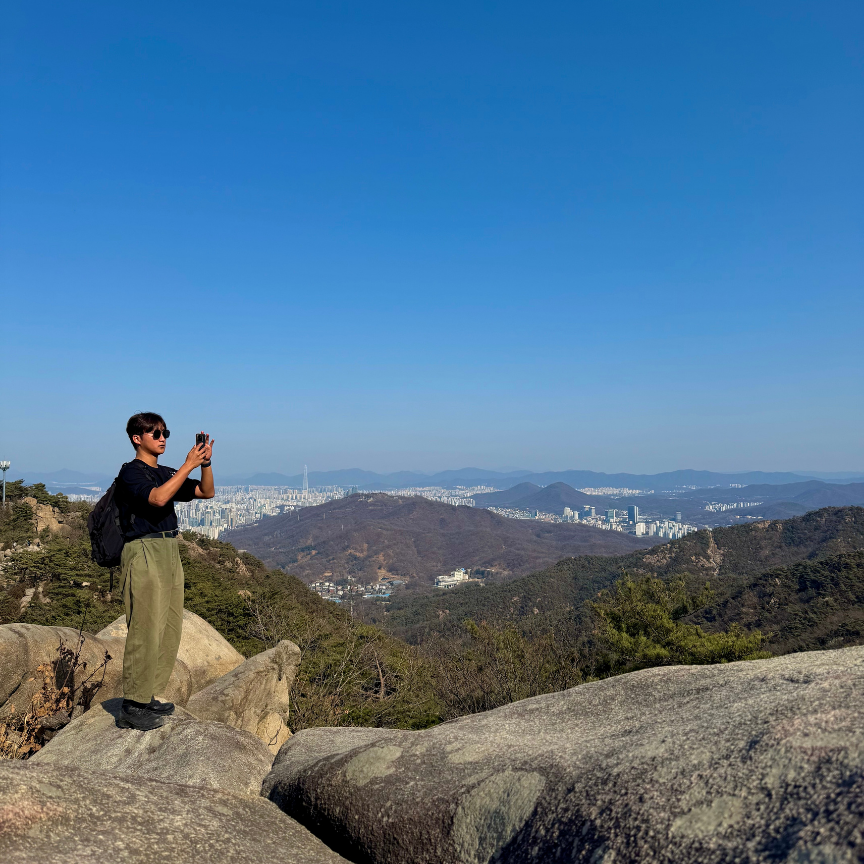
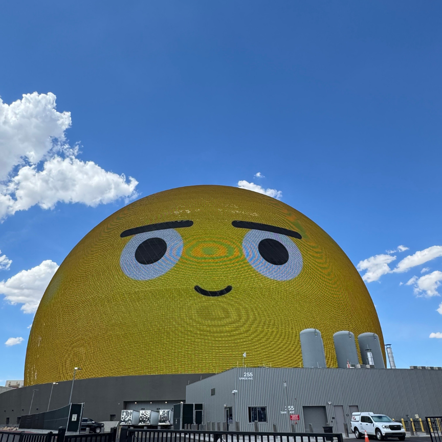

성균관대학교 컴퓨터네트워크개론 과제
박승우
세상의 이치에 대해 관심이 많은 성균관대학교 소프트웨어학과 23학번 박승우입니다.
About me
세상의 이치에 대해 관심이 많다보니 공학적인 궁금증 보다는 과학적인 궁금증을 더 많이 가지고 있습니다.
그 중에서도 특히 뇌과학, 물리학에 관심이 깊습니다.
넓은 의미에서의 제 목표는 뇌의 인지기능이 어떻게 형성되는지를 밝혀내고 싶고,
가능하다면 밝혀낸 인지기능의 형성 원리를 바탕으로 현재의 LLM을 넘어선 AGI를 실현하고 싶습니다.
컴퓨터 공학을 전공하며 배운 많은 지식들과,
물리학에서 얻은 인사이트를 바탕으로 이 목표를 이뤄내보려 합니다.
또, 자연을 사랑해 더 많은 자연을 탐험할 수 있는 취미를 가지고 있습니다.
매 학기가 끝난 후 한 번 씩은 꼭 혼자서 등산을 하려고 하는 편이고,
친구들과 때때로 낚시를 하러 가는 것을 좋아합니다. 그중에서도 가짜 미끼를 이용해 물고기를 속이는 루어 낚시를 좋아합니다.
마지막으로 여행도 좋아합니다. 아래 사진은 지난 여름 교내 프로그램을 통해 UC Berkeley에서 계절학기를 수강하게 되었는데 학기가 종료된 후 한국에 돌아오기까지 남은 약 1주일의 시간동안 가보고 싶었던 Las Vegas에 다녀왔습니다.
이처럼 시간과 여유가 되는 경우 완전히 다른 문화나 환경을 경험해보기 위한 여행도 좋아합니다.
Gallery

